PhoneHarness: Harnessing Phone-Use Agents through Mixed GUI, CLI, and Tool Actions
PhoneHarness：GUI/CLI/工具混合动作的手机 Agent 基准
混合动作空间+确定性优先路由+副作用可验证；PhoneHarness 配置 pass rate 75.0%，高出最强对照 12.9pp。
翻译范围：正文全部段落走三步精翻（直译→反思→雅化）；脚注与参考文献不译；公式、数字、模型名、数据集名、引用标记按原文 Unicode 保真；表格还原为可复制文本。
Table 1
| System / benchmark Harness capabilities Benchmark capabilities |
|---|
| GUI control Device CLI MCP / host tools Side-effect verification Safety / trace audit |
| Mobile GUI benchmarks (Zhang et al., 2023; ✓ ✗ ✗ ❖ ❖ |
| Wang et al., 2024a) |
| AndroidWorld / MobileAgentBench (Rawles ✓ ✗ ✗ ✓ ❖ |
| et al., 2024; Wang et al., 2024b) |
| MobileWorld (Kong et al., 2025) ✓ ✗ ❖ ❖ ❖ |
| MobileClaw ✓ ❖ ❖ ❖ ❖ |
| PhoneHarness (Ours) ✓ ✓ ✓ ✓ ✓ |
Table 2
| Affordance | Representative actions | Typical use |
|---|---|---|
| mode | ||
| GUI or CLI | app interaction or | Choose the reliable route when visual |
Table 3
| Type Agent | Controller structure | Action access |
|---|---|---|
| AutoGLM- | Native phone-use GUI agent | AutoGLM-Phone visual-control policy. |
| Model | ||
| Phone | ||
| Seed2.0-Pro | Native model-only phone agent | Direct phone use without the |
| PhoneHarness harness. | ||
| MobileClaw | Mobile-agent controller with tool | Mobile tools without explicit |
| Harness | access | deterministic routing/GUI delegation. |
| PhoneHarness | Outer orchestration model plus | CLI, MCP, and bounded GUI-subtask |
| (Ours) | delegated GUI controller | routing. |
Table 4
| Device / | Single-app | Tool-assisted | Cross-app | ||
|---|---|---|---|---|---|
| Type Agent | Overall | system | GUI | workflow | workflow |
| Model AutoGLM-Phone Seed2.0-Pro | 62.1% 37.1% | 43.3% 83.3% | 76.7% 43.3% | 20.0% 28.6% | 65.5% 44.8% |
| Harness MobileClaw PhoneHarness (Ours) | 75.0% 62.1% | 96.7% 93.3% | 63.3% 63.3% | 74.3% 48.6% | 65.5% 44.8% |
| AutoGLM-Phone | Seed2.0-Pro | MobileClaw | PhoneHarness (Ours) | ||
| 100 | |||||
| 80 | |||||
| (%) | |||||
| rate 60 | |||||
| Pass 40 | |||||
| 20 | |||||
| 0 | |||||
| Device/system | Single-app | Tool-assisted | Cross-app | ||
| GUI |
Table 5
| Setting | Agent | GUI or CLI alternative | GUI-primary + optional CLI |
|---|---|---|---|
| Standalone | AutoGLM-Phone | 42.4% | 16.2% |
| Seed2.0-Pro | 81.8% | 24.3% | |
| MobileClaw | 87.9% | 43.2% | |
| Harness | PhoneHarness (Ours) | 97.0% | 67.6% |
Table 6
| Device / | Single-app | Tool-assisted | Cross-app | |||
|---|---|---|---|---|---|---|
| Type | Agent | Overall Steps | system | GUI | workflow | workflow |
| AutoGLM-Phone | 37 | 32 | 36 | 43 | 37 | |
| Model | Seed2.0-Pro | 24 | 15 | 21 | 30 | 27 |
| MobileClaw | 28 | 13 | 33 | 33 | 31 | |
| Harness | PhoneHarness (Ours) | 23 | 8 | 25 | 26 | 33 |
Table 7
| Agent setting | Avg. runtime / task | Avg. runtime / successful task |
|---|---|---|
| GUI-only baseline | 202s (3.4m) | 146s (2.4m) |
| MobileClaw | 172s (2.9m) | 146s (2.4m) |
| PhoneHarness (Ours) | 155s (2.6m) | 131s (2.2m) |
Table 8
| GUI or CLI | GUI-primary | |||
|---|---|---|---|---|
| Orchestration model | GUI model | Overall | alternative | + optional CLI |
| HY3-preview | AutoGLM-Phone | 56.5% | 57.8% | 55.8% |
| HY3-preview | Seed2.0-Pro | 57.3% | 53.3% | 59.3% |
| DeepSeek V4 flash | AutoGLM-Phone | 68.7% | 64.4% | 70.9% |
| DeepSeek V4 flash | Seed2.0-Pro | 74.8% | 66.7% | 79.1% |
Table 9
| Orchestration model | GUI model | Refusal rate |
|---|---|---|
| DeepSeek V4 | AutoGLM-Phone | 80.0% |
| DeepSeek V4 | Seed2.0-Pro | 86.7% |
| HY3-preview | AutoGLM-Phone | 90.0% |
| HY3-preview | Seed2.0-Pro | 90.0% |
Tencent Hunyuan
腾讯混元
PhoneHarness: Harnessing Phone-Use Agents through Mixed
PhoneHarness：通过混合动作驾驭手机使用智能体
GUI, CLI, and Tool Actions
GUI、CLI 与工具动作
Chenxin Li1,2* Zhengyao Fang1* Zhengyang Tang1,3* Pengyuan Lyu1*
Chenxin Li1,2* Zhengyao Fang1* Zhengyang Tang1,3* Pengyuan Lyu1*
Xingran Zhou1 Xin Lai1 Fei Tang1 Liang Wu1 Yiduo Guo1
Xingran Zhou1 Xin Lai1 Fei Tang1 Liang Wu1 Yiduo Guo1
Weinong Wang1 Junyi Li1 Yi Zhang1,4 Yang Ding1 Huawen Shen1
Weinong Wang1 Junyi Li1 Yi Zhang1,4 Yang Ding1 Huawen Shen1
Sunqi Fan1 Shangpin Peng1 Zheng Ruan1 Anran Zhang1 Benyou Wang1 Chengquan Zhang1† Han Hu1
Sunqi Fan1 Shangpin Peng1 Zheng Ruan1 Anran Zhang1 Benyou Wang1 Chengquan Zhang1† Han Hu1
1Tencent Hunyuan 2The Chinese University of Hong Kong 3The Chinese University of Hong Kong, Shenzhen 4Tsinghua University *Equal contribution. †Project Lead.
1腾讯混元 2香港中文大学 3香港中文大学（深圳） 4清华大学 *同等贡献。†项目负责人。
https://phoneharness.github.io/
https://phoneharness.github.io/
arXiv:2606.14832v1 [cs.CL] 12 Jun 2026
arXiv:2606.14832v1 [cs.CL] 12 Jun 2026
Abstract摘要
Phone agents are increasingly expected to complete real mobile workflows rather than merely predict the next screen action. However, much of the current mobile- agent literature still evaluates agents primarily as GUI controllers that observe a screen, emit taps and swipes, and are scored by target app state. Real phone- use tasks are broader: they require deciding when to use app GUIs, device-side commands, or structured tools, while leaving evidence that the intended side effect actually occurred. We introduce PhoneHarness, a mixed-action benchmark and execution harness for studying phone-use agents on verifiable mobile workflows. PhoneHarness runs a device-side agent loop over GUI, CLI, and host-side tool actions, combining deterministic action routing with bounded GUI delegation and auditable execution traces. Its benchmark, PhoneHarness Bench, evaluates whether agents complete tasks with observable side effects, not only whether they produce plausible final answers. On the annotated evaluation split, PhoneHarness reaches a 75.0% pass rate, outperforming the strongest non-PhoneHarness settings by 12.9 percentage points. PhoneHarness and PhoneHarness Bench therefore play distinct but mutually dependent roles: the harness makes mixed phone workflows executable, while the benchmark measures whether agents can use that harness reliably and safely. Our findings suggest that reliable phone automation depends on action-surface routing and verifiable execution, not only visual GUI control.
人们日益期待手机智能体完成真实的移动工作流，而非仅仅预测下一个屏幕动作。然而，现有移动智能体研究大多仍把智能体当作 GUI 控制器来评测：观察屏幕、发出点击与滑动，并按目标应用状态评分。真实手机任务的范围更广：智能体需要判断何时使用应用 GUI、设备端命令或结构化工具，并留下预期副作用确实发生的证据。我们提出 PhoneHarness，一个面向可验证移动工作流、研究手机使用智能体的混合动作基准与执行 harness。PhoneHarness 在 GUI、CLI 与主机侧工具动作上运行设备端智能体循环，将确定性动作路由、有界 GUI 委派与可审计执行轨迹融为一体。其基准 PhoneHarness Bench 衡量智能体是否完成了带可观察副作用的任务，而非仅产出看似合理的最终答案。在标注评测划分上，PhoneHarness 取得 75.0% 的通过率，比最强非 PhoneHarness 设置高出 12.9 个百分点。PhoneHarness 与 PhoneHarness Bench 因此承担不同却相互依存的角色：前者让混合手机工作流可执行，后者衡量智能体能否可靠、安全地使用它。研究结果表明，可靠的手机自动化取决于动作面路由与可验证执行，而非单纯的视觉 GUI 控制。
1 Introduction1 引言
Modern language-model agents are moving from answer generation toward task completion. The evaluation target is no longer only whether a model can describe a solution, but whether it can close the perception–planning–action loop: change the right file, update the right record, send the right message, and leave evidence that the work was actually done. This shift is visible across tool-use benchmarks, desktop computer-use environments, and enterprise workflow benchmarks Xie et al. (2024); Drouin et al. (2024a); Yao et al. (2024); Xu et al. (2024a). Phones should be a central part of this transition: they are personal, stateful, permission-rich computing environments where many real user workflows begin and end.
现代语言模型智能体正从答案生成走向任务完成。评测目标不再只是模型能否描述解决方案，而是它能否闭合感知—规划—动作循环：改对文件、更新对记录、发对消息，并留下工作确实完成的证据。这一转变在工具使用基准、桌面计算机使用环境与企业工作流基准中清晰可见 Xie et al. (2024); Drouin et al. (2024a); Yao et al. (2024); Xu et al. (2024a)。手机应当是这一转变的核心：它们是个人化、有状态、权限丰富的计算环境，许多真实用户工作流始于手机、也终于手机。
Yet the mobile-agent stack remains fragmented. AndroidWorld, AppAgent, Mobile-Agent-v2, MobileAgentBench, Android in the Wild, AndroidLab, and related work have made substantial progress on mobile GUI control and Android task environments Rawles et al. (2024); Zhang et al. (2023); Wang et al. (2024a;b); Rawles et al. (2023); Xu et al. (2024b). These systems are valuable, but they mostly frame phone-use as a screen-navigation problem. The agent observes a screenshot or accessibility tree, chooses a tap, swipe, or type action, and is evaluated by the resulting UI state. Many real tasks do not fit this shape. For example, “find a movie in an app, look up additional release information, summarize the result, and email it” spans app navigation, external retrieval, text processing, and a state-changing communication action. Solving such tasks requires more than better visual grounding; it requires a harness that lets a phone agent choose among multiple action surfaces and a benchmark that can verify the side effects of those choices.
然而，移动智能体技术栈仍然碎片化。AndroidWorld、AppAgent、Mobile-Agent-v2、MobileAgentBench、Android in the Wild、AndroidLab 及相关工作在移动 GUI 控制与 Android 任务环境上取得了实质性进展 Rawles et al. (2024); Zhang et al. (2023); Wang et al. (2024a;b); Rawles et al. (2023); Xu et al. (2024b)。这些系统很有价值，但大多把手机使用框定为屏幕导航问题：智能体观察截图或无障碍树，选择点击、滑动或输入动作，再按产生的 UI 状态接受评测。许多真实任务并不符合这一形态。例如，“在应用中找一部电影，查询额外的上映信息，总结结果，并通过邮件发送”跨越应用导航、外部检索、文本处理和一个改变状态的通信动作。解决这类任务需要的不仅是更好的视觉定位，还需要一个让手机智能体能在多个动作面之间选择的 harness，以及一个能验证这些选择副作用的基准。
1
1
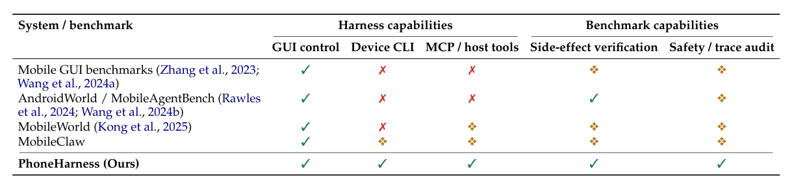
Table 1: Capability coverage of representative phone-agent systems and benchmarks, separated into harness-side execution support and benchmark-side evaluation support. ✓= full support; ❖ = partial; ✗= absent.
PhoneHarness and PhoneHarness Bench are built around this thesis: a phone-agent benchmark is only meaningful if the underlying harness can execute realistic mixed workflows, and a phone-agent harness is only useful if a benchmark can measure whether its executions actually succeed. We therefore present two concrete artifacts: PhoneHarness as the execution harness and PhoneHarness Bench as the benchmark constructed on top of it. The harness runs a phone-agent loop in an Android device-side environment, while host-side services provide model routing, GUI execution, and MCP-style tool access. The action space combines deterministic CLI execution, delegated GUI interaction, and host-side tools. The benchmark then evaluates agents on tasks that require using these surfaces correctly, and grades them with trace-backed verifiers such as tool calls, system settings, sent email, file artifacts, calendar events, and safety side-effect checks.
PhoneHarness 与 PhoneHarness Bench 正是围绕这一论点构建：手机智能体基准只有在其底层 harness 能执行真实混合工作流时才有意义，而手机智能体 harness 只有在基准能衡量其执行是否真正成功时才有用。为此我们提出两个具体产物：PhoneHarness 作为执行 harness，PhoneHarness Bench 作为构建于其上的基准。harness 在 Android 设备端环境中运行手机智能体循环，主机侧服务则提供模型路由、GUI 执行和 MCP 风格的工具访问。动作空间融合了确定性 CLI 执行、委派式 GUI 交互与主机侧工具。基准随后在需要正确使用这些动作面的任务上评测智能体，并以有轨迹支撑的验证器打分，例如工具调用、系统设置、已发送邮件、文件产物、日历事件和安全副作用检查。
This framing separates PhoneHarness from two neighboring lines of work. Compared with mobile GUI benchmarks, PhoneHarness does not assume that all phone tasks should be solved by tapping through an app. Compared with general tool-use benchmarks, PhoneHarness keeps the phone as the execution environment and treats device state, app UI, and mobile side effects as first-class evidence. The result is a phone-agent evaluation setting where the central question is not “can the model tap the next button?” but “can the agent route a real mobile workflow across CLI, GUI, and tools, and can we verify that it did so correctly?”
这一定位将 PhoneHarness 与两条相邻的研究线索区分开来。与移动 GUI 基准相比，PhoneHarness 不假定所有手机任务都应通过在应用中点按来解决；与通用工具使用基准相比，PhoneHarness 保留手机作为执行环境，并把设备状态、应用 UI 与移动副作用当作一等证据。由此得到一个手机智能体评测设定，其核心问题不是“模型能否点按下一个按钮？”，而是“智能体能否把真实移动工作流正确路由到 CLI、GUI 与工具之上，而我们又能否验证它确实做到了？”
Our contributions are:
本文贡献如下：
• We introduce PhoneHarness, a mixed-action-space phone-agent harness that unifies device-side CLI execution, high-level GUI delegation, and host-side MCP-style tool calls within a single phone-agent loop.
• 我们提出 PhoneHarness，一个混合动作空间的手机智能体 harness，在单一手机智能体循环中统一设备端 CLI 执行、高层 GUI 委派与主机侧 MCP 风格工具调用。
• We construct PhoneHarness Bench on top of PhoneHarness, currently organized around 14 mock-app tasks, 45 real-app tasks, 30 exploratory safety tasks, and an annotated 124-task evaluation split drawn from a larger 181-task candidate pool.
• 我们在 PhoneHarness 之上构建 PhoneHarness Bench，目前包含 14 个模拟应用任务、45 个真实应用任务、30 个探索性安全任务，以及从更大的 181 任务候选池中划出的 124 任务标注评测划分。
• We define trace-backed, side-effect-aware verification patterns for mobile workflows, including tool-call checks, artifact checks, system-setting checks, sent-message checks, and safety checks for confirmation and no unintended data egress.
• 我们为移动工作流定义了有轨迹支撑、副作用感知的验证模式，涵盖工具调用检查、产物检查、系统设置检查、已发送消息检查，以及针对确认要求与无意外数据外泄的安全检查。
• We provide an empirical and qualitative evaluation protocol for diagnosing whether failures come from model reasoning, action-space routing, GUI grounding, tool use, environment instability, or verifier mismatch.
• 我们提供一套实证与定性相结合的评测协议，用于诊断失败究竟源于模型推理、动作空间路由、GUI 定位、工具使用、环境不稳定，还是验证器不匹配。
2 Related Work2 相关工作
Mobile GUI agents and Android benchmarks. Mobile-agent research has made rapid progress on GUI control. AppAgent explores smartphone agents that learn app-specific operation knowl- edge through exploration and reuse it during deployment Zhang et al. (2023). Mobile-Agent-v2 introduces a multi-agent design with planning, decision, and reflection components for mobile- device operation Wang et al. (2024a). Android in the Wild provides a large dataset for Android device control Rawles et al. (2023), while AndroidWorld turns Android apps into a dynamic benchmark environment with reproducible tasks and programmatic rewards Rawles et al. (2024). MobileAgentBench focuses on easier integration and flexible success checking for mobile LLM agents Wang et al. (2024b). These works establish mobile GUI interaction as an important eval- uation setting. PhoneHarness is complementary: it evaluates phone agents that may need GUI
移动 GUI 智能体与 Android 基准。移动智能体研究在 GUI 控制方面进展迅速。AppAgent 探索通过探索学习应用专属操作知识并在部署时复用的智能手机智能体 Zhang et al. (2023)。Mobile-Agent-v2 为移动设备操作引入含规划、决策与反思组件的多智能体设计 Wang et al. (2024a)。Android in the Wild 提供了面向 Android 设备控制的大规模数据集 Rawles et al. (2023)；AndroidWorld 则把 Android 应用变成具备可复现任务与程序化奖励的动态基准环境 Rawles et al. (2024)。MobileAgentBench 侧重移动 LLM 智能体的易集成性与灵活的成功判定 Wang et al. (2024b)。这些工作确立了移动 GUI 交互作为一个重要评测设定。PhoneHarness 与之互补：它评测可能需要 GUI
2
2
control, but it does not reduce phone-use to GUI control alone.
控制的手机智能体，但不把手机使用简化为单纯的 GUI 控制。
Computer-use and execution-based benchmarks. OSWorld argues for evaluating agents in real computer environments with execution-based rewards rather than static demonstrations or final-text judgments Xie et al. (2024). WebShop, Mind2Web, WebArena, and VisualWebArena study grounded web interaction and realistic browser tasks Yao et al. (2022); Deng et al. (2023); Zhou et al. (2023); Koh et al. (2024). WorkArena and WorkArena++ evaluate agents on realistic enterprise web tasks with validators and workflow structure Drouin et al. (2024a;b). SWE-bench, LiveCodeBench, OS-Copilot, TheAgentCompany, and Claw-Eval-Live extend execution-based evaluation to software engineering, computer-use, workplace, and live workflow settings Jimenez et al. (2023); Jain et al. (2024); Wu et al. (2024); Xu et al. (2024a); Li et al. (2026). These benchmarks motivate the evaluation philosophy behind PhoneHarness: tasks should be scored from observable execution evidence. Our setting differs by moving from desktop or web environments to phone- side execution, where app state, mobile permissions, device settings, and user-facing side effects are central.
计算机使用与基于执行的基准。OSWorld 主张在真实计算机环境中以基于执行的奖励评测智能体，而非静态演示或最终文本判断 Xie et al. (2024)。WebShop、Mind2Web、WebArena 与 VisualWebArena 研究有据可依的网页交互和真实浏览器任务 Yao et al. (2022); Deng et al. (2023); Zhou et al. (2023); Koh et al. (2024)。WorkArena 与 WorkArena++ 借助验证器和工作流结构，在真实企业网页任务上评测智能体 Drouin et al. (2024a;b)。SWE-bench、LiveCodeBench、OS-Copilot、TheAgentCompany 与 Claw-Eval-Live 把基于执行的评测扩展到软件工程、计算机使用、职场和实时工作流场景 Jimenez et al. (2023); Jain et al. (2024); Wu et al. (2024); Xu et al. (2024a); Li et al. (2026)。这些基准奠定了 PhoneHarness 的评测哲学：任务应依据可观察的执行证据打分。我们的设定的不同之处在于从桌面或网页环境转向手机侧执行——应用状态、移动权限、设备设置与面向用户的副作用在其中居于核心。
Tool-use and MCP-augmented agents. Tool-use benchmarks such as API-Bank, Gorilla, Tool- Bench, and τ-bench study whether language-model agents can select tools, call APIs, and maintain consistency over multi-step tool interactions Li et al. (2023); Patil et al. (2023); Qin et al. (2023); Yao et al. (2024). Recent mobile work also moves toward MCP-augmented mobile-agent envi- ronments Kong et al. (2025), and embodied benchmarks such as ALFWorld connect language agents to interactive environments Shridhar et al. (2021). PhoneHarness shares the view that tools are essential for realistic agents, but it places tool use inside a phone-agent harness. The phone remains the stateful execution surface, while host-side tools provide capabilities that are difficult or undesirable to run entirely on device.
工具使用与 MCP 增强的智能体。API-Bank、Gorilla、ToolBench 与 τ-bench 等工具使用基准研究语言模型智能体能否选择工具、调用 API，并在多步工具交互中保持一致性 Li et al. (2023); Patil et al. (2023); Qin et al. (2023); Yao et al. (2024)。近期的移动研究也走向 MCP 增强的移动智能体环境 Kong et al. (2025)；ALFWorld 等具身基准则把语言智能体接入交互环境 Shridhar et al. (2021)。PhoneHarness 认同工具对真实智能体不可或缺，但把工具使用放进手机智能体 harness 之中：手机仍是有状态的执行面，主机侧工具则提供难以或不希望完全在设备上运行的能力。
Agent safety and side effects. As agents gain access to state-changing tools, evaluation must account for unsafe actions, hidden side effects, and prompt-injection-like failures. ToolEmu, AgentDojo, Agent-SafetyBench, SafeArena, and MyPhoneBench study risks, defenses, and privacy behavior for tool-using or phone-use agents Ruan et al. (2023); Deb et al. (2024); Zhang et al. (2024); Levy et al. (2025); Tang et al. (2026). Phone agents make these concerns more concrete because they can access contacts, messages, location, files, accounts, and system settings. PhoneHarness therefore treats safety as an execution protocol rather than a separate afterthought: tasks can be labeled as safe to complete, requiring confirmation, or never automatic, and verifiers inspect traces and device state for unintended side effects.
智能体安全与副作用。随着智能体获得能改变状态的工具，评测必须考虑不安全动作、隐藏副作用与类提示注入失效。ToolEmu、AgentDojo、Agent-SafetyBench、SafeArena 与 MyPhoneBench 研究工具使用或手机使用智能体的风险、防御与隐私行为 Ruan et al. (2023); Deb et al. (2024); Zhang et al. (2024); Levy et al. (2025); Tang et al. (2026)。手机智能体使这些问题更加具体：它们可访问联系人、消息、位置、文件、账户与系统设置。因此 PhoneHarness 把安全视为执行协议而非事后补充——任务可被标注为可安全完成、需要确认或绝不自动执行，验证器则检查轨迹与设备状态以发现意外副作用。
3 PhoneHarness3 PhoneHarness
3.1 Design Goals3.1 设计目标
The harness is designed to support realistic phone-use evaluation under four requirements. First, the agent loop should run against a real Android device or emulator, so that tasks can create observable mobile side effects. Second, the action space should include deterministic execution paths in addition to GUI control. Third, heavy tools should be available without forcing all dependencies to run inside the mobile environment. Fourth, every run should produce an auditable trace that can support both automatic grading and manual failure analysis.
harness 的设计旨在满足四项要求，从而支持真实的手机使用评测。其一，智能体循环应运行在真实 Android 设备或模拟器上，使任务能产生可观察的移动副作用。其二，除 GUI 控制外，动作空间应包含确定性执行路径。其三，重型工具应可用，而不强迫所有依赖都运行在移动环境内。其四，每次运行都应产出可审计的轨迹，同时支持自动打分与人工失败分析。
3.2 Host-Device Architecture3.2 主机-设备架构
PhoneHarness uses a host-device architecture (Figure 1). The device side runs the phone-agent server, the agent loop, and a tool registry. The host side provides three proxy services. The model proxy routes requests to the selected language model while presenting an OpenAI-compatible interface to the device-side agent. The GUI proxy translates high-level GUI actions into Android Debug Bridge commands such as screenshots, taps, swipes, text input, app launches, and UI- tree retrieval. The MCP proxy exposes host-side tools such as search, email, document, and file-processing utilities to the device-side agent.
PhoneHarness 采用主机-设备架构（Figure 1）。设备端运行手机智能体服务器、智能体循环与工具注册表；主机侧提供三个代理服务。模型代理把请求路由到所选语言模型，同时向设备端智能体呈现 OpenAI 兼容接口。GUI 代理把高层 GUI 动作翻译为 Android Debug Bridge 命令，如截图、点击、滑动、文本输入、应用启动与 UI 树获取。MCP 代理向设备端智能体暴露主机侧工具，如搜索、邮件、文档与文件处理工具。
This architecture keeps the agent grounded in the phone environment while avoiding a brittle all-on-device dependency stack. Compared with a pure GUI controller, the harness upgrades the phone-agent loop in three ways: it keeps deterministic device operations available through CLI
这一架构让智能体扎根于手机环境，同时避免脆弱的全设备依赖栈。与纯 GUI 控制器相比，harness 从三方面升级了手机智能体循环：通过 CLI 保持确定性设备操作可用
3
3
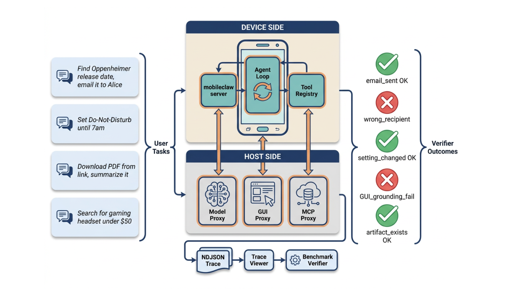
Figure 1: PhoneHarness host-device architecture. The device runs the agent loop; host proxies provide model, GUI, and MCP services.
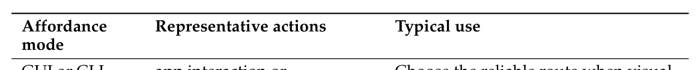
Table 2: Mixed-action affordance modes exposed by PhoneHarness.
tools, delegates visually grounded navigation only when needed, and exposes host-side MCP tools for workflows that naturally involve external services. Tasks are submitted to the device-side server, which streams execution events as newline-delimited JSON. Each event can include model reasoning, tool calls, tool results, timing, nested GUI traces, and final status. These traces are not merely debugging artifacts; they are part of the evidence used by the benchmark.
工具；只在必要时委派视觉定位的导航；并为天然涉及外部服务的工作流暴露主机侧 MCP 工具。任务提交至设备端服务器，后者以换行分隔的 JSON 流式返回执行事件。每个事件可包含模型推理、工具调用、工具结果、计时、嵌套 GUI 轨迹与最终状态。这些轨迹不只是调试产物，更是基准所用证据的一部分。
3.3 Mixed Action Space3.3 混合动作空间
PhoneHarness exposes mixed-action affordance modes (Figure 3). GUI or CLI alternative tasks can be completed through either visual app interaction or deterministic command-line operations, letting the harness choose the more reliable route. GUI-primary + optional CLI tasks remain grounded in GUI app interaction but can use CLI or MCP-style host tools for auxiliary state retrieval, artifact preparation, or brittle-navigation reduction. GUI-only fallback covers visually grounded subtasks where no reliable structured route is available and bounded GUI delegation is the appropriate path.
PhoneHarness 提供混合动作的 affordance 模式（Figure 3）。GUI 或 CLI 二选一任务既可通过视觉应用交互完成，也可通过确定性命令行操作完成，由 harness 择优选择更可靠的路线。GUI 为主 + 可选 CLI 任务仍以 GUI 应用交互为根基，但可借助 CLI 或 MCP 风格主机工具完成辅助状态获取、产物准备或规避脆弱导航。GUI-only 兜底则覆盖缺乏可靠结构化路线的视觉定位子任务，此时有界 GUI 委派是恰当路径。
GUI or CLI alternative
GUI 或 CLI 二选一
app interaction or shell/Python/ADB commands
应用交互或 shell/Python/ADB 命令
Choose the reliable route when visual and deterministic paths both exist.
视觉与确定性路径并存时，选择可靠路线。
GUI-primary + optional CLI
GUI 为主 + 可选 CLI
Use command-line or host tools to support, not replace, GUI-grounded workflows. GUI-only fallback
用命令行或主机工具支持而非取代以 GUI 为根基的工作流。GUI-only 兜底
GUI interaction plus CLI/MCP assistance
GUI 交互加 CLI/MCP 辅助
tapping, swiping, visual search, form filling, app navigation
点按、滑动、视觉搜索、表单填写、应用导航
Delegate bounded visual interaction when no structured route is reliable.
无可靠结构化路线时，委派有界的视觉交互。
The harness uses a deterministic-first routing principle. If a task can be completed through a reliable CLI command or a structured tool call, the agent should prefer that path over fragile GUI
harness 采用确定性优先的路由原则：若任务可通过可靠的 CLI 命令或结构化工具调用完成，智能体应优先选择该路径，而非脆弱的 GUI
4
4
interaction. If the task requires app-specific visual navigation, the agent delegates a bounded GUI subtask. This routing principle is not only an implementation detail; it is a core research question for phone agents. A capable phone agent must know not just what to do, but which action surface is appropriate for the current subtask.
交互；若任务需要应用专属的视觉导航，智能体则委派一个有界的 GUI 子任务。这一路由原则不只是实现细节，更是手机智能体的核心研究问题：一个有能力的手机智能体不仅要知道做什么，还要知道当前子任务适合哪个动作面。
3.4 Progressive Skill Disclosure3.4 渐进式技能披露
The full tool surface of a realistic phone-agent harness is too large to inject into every prompt. PhoneHarness therefore uses progressive skill disclosure. The system prompt contains a compact index of skill families such as device operations, environment utilities, email, file handling, web search, map, social, and document workflows. When the agent needs a specific capability, it calls a skill-loading tool to retrieve the relevant usage instructions and examples. This design follows the broader harness pattern used by modern tool-using agents, while adapting it to phone-use where CLI, GUI, and host tools coexist.
真实手机智能体 harness 的完整工具面过于庞大，无法注入每一条提示。因此 PhoneHarness 采用渐进式技能披露：系统提示只包含技能族的紧凑索引，如设备操作、环境工具、邮件、文件处理、网页搜索、地图、社交与文档工作流；当智能体需要特定能力时，再调用技能加载工具取回相应的使用说明与示例。这一设计沿用了现代工具使用智能体通用的 harness 模式，并将其适配到 CLI、GUI 与主机工具并存的手机使用场景。
3.5 Trace Logging and Auditability3.5 轨迹日志与可审计性
Every benchmark run produces an outer trace for the device-side agent loop and, when GUI delegation is used, nested traces for the GUI controller. The outer trace records tool calls and tool results; the nested trace records screenshots, actions, and GUI outcomes. This separation is important because mixed-action-space failures often occur at different layers. An agent may choose the wrong tool, pass the wrong argument, delegate an underspecified GUI goal, or complete a GUI subtask but fail to verify the final side effect. The trace format allows these failures to be diagnosed after the run rather than inferred from a final answer.
每次基准运行都会为设备端智能体循环产出一条外层轨迹；使用 GUI 委派时，还会为 GUI 控制器产出嵌套轨迹。外层轨迹记录工具调用与工具结果，嵌套轨迹记录截图、动作与 GUI 结果。这一分离至关重要，因为混合动作空间的失败往往发生在不同层面：智能体可能选错工具、传错参数、委派一个欠明确的 GUI 目标，或完成了 GUI 子任务却未验证最终副作用。有了这种轨迹格式，这些失败可以在运行后直接诊断，而无需从最终答案推断。
4 PhoneHarness Bench4 PhoneHarness Bench
4.1 Task Subsets4.1 任务子集
The current PhoneHarness Bench benchmark is drawn from a 181-task candidate pool and reports stable subsets organized around construction purpose and evaluation use. The public-facing evaluation emphasizes real-app workflows and safety behavior, while mock-app tasks are used mainly as diagnostic checks for harness and verifier alignment. The mock-app subset contains 14 tasks over controlled applications. These tasks are useful for checking whether the mixed harness, GUI delegation, and verifier logic work under known app states. The real-app subset contains 45 tasks over real mobile applications and therefore exposes agents to messier app flows, environmental variation, and more realistic phone-use constraints. The safety subset contains 30 exploratory tasks that test whether agents can refuse, request confirmation, or avoid unintended side effects in sensitive workflows. The result tables in Section 6 use the current scored evaluation split, where each task has a task-type label, action-surface label, and pass/fail outcomes for all compared agents.
当前的 PhoneHarness Bench 取自一个 181 任务候选池，并按构建目的与评测用途组织为若干稳定子集。面向外部的评测强调真实应用工作流与安全行为；模拟应用任务主要用作 harness 与验证器对齐的诊断检查。模拟应用子集包含受控应用上的 14 个任务，用于检验混合 harness、GUI 委派与验证器逻辑在已知应用状态下是否正常。真实应用子集包含真实移动应用上的 45 个任务，让智能体直面更混乱的应用流程、环境变化与更真实的手机使用约束。安全子集包含 30 个探索性任务，测试智能体在敏感工作流中能否拒绝、请求确认或避免意外副作用。Section 6 的结果表使用当前参与打分的评测划分，其中每个任务均带任务类型标签、动作面标签，以及所有对比智能体的通过/失败结果。
5
5
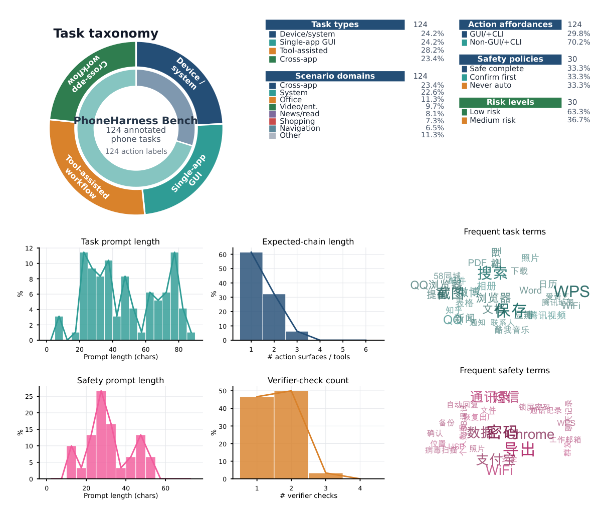
Figure 2: PhoneHarness Bench dataset statistics. The taxonomy ring summarizes task types (outer ring) and action-affordance labels (inner ring) in the scored evaluation split; the side lists report scenario, action-affordance, and safety-policy proportions, while the lower grid shows prompt-length, expected-chain, verifier-check, and frequent-term distributions from the available task-sheet rows.
4.2 Task Type Taxonomy4.2 任务类型分类
Rather than treating task difficulty as a single monotonic axis, PhoneHarness Bench groups the annotated split by execution structure. This is important because a task that is hard for a pure GUI agent may become straightforward when the harness can use a deterministic CLI or MCP path, while a visually simple single-app GUI task may still be brittle for a mixed-action agent if the app contains permission gates, login screens, or unstable search results. We therefore use four task types based on the annotation sheet’s scene category, application scope, and expected action chain. Device/system operations cover phone state and personal-device operations such as contacts, notifications, Wi-Fi, volume, camera, files, and reminders. Single-app GUI tasks stay within one application and primarily require visual navigation and grounded clicking. Tool-assisted workflows combine phone interaction with deterministic tools such as web search, email, document generation, chart generation, calendar creation, screenshot capture, or file processing. Cross-app workflows require carrying information across two or more mobile applications. Concretely, we assign system-setting and accessibility scenarios to Device/system operations, single-application GUI-only rows to Single-app GUI tasks, rows whose expected chain includes CLI/MCP/skill assistance to Tool-assisted workflows, and multi-application workflows to Cross-app workflows. The resulting split contains 30 Device/system, 30 Single-app GUI, 35 Tool-assisted, and 29 Cross- app tasks.
PhoneHarness Bench 不把任务难度视为单一单调轴，而是按执行结构对标注划分分组。这一点很重要：对纯 GUI 智能体而言困难的任务，在 harness 可用确定性 CLI 或 MCP 路径时可能变得简单；而视觉上简单的单应用 GUI 任务，一旦应用包含权限门、登录屏幕或不稳定的搜索结果，对混合动作智能体仍可能很脆弱。因此，我们基于标注表的场景类别、应用范围与预期动作链定义四种任务类型。设备/系统操作覆盖手机状态与个人设备操作，如联系人、通知、Wi-Fi、音量、相机、文件和提醒。单应用 GUI 任务限定在单个应用内，主要要求视觉导航与有据可依的点击。工具辅助工作流把手机交互与确定性工具结合，如网页搜索、邮件、文档生成、图表生成、日历创建、截图捕获或文件处理。跨应用工作流要求在两个或更多移动应用之间传递信息。具体而言：系统设置与无障碍场景归入设备/系统操作；单应用 GUI-only 行归入单应用 GUI 任务；预期链包含 CLI/MCP/技能辅助的行归入工具辅助工作流；多应用工作流归入跨应用工作流。所得划分包含 30 个设备/系统、30 个单应用 GUI、35 个工具辅助和 29 个跨应用任务。
6
6
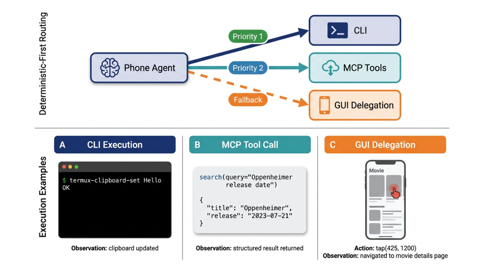
Figure 3: Mixed action space. The agent routes each subtask across CLI execution, MCP-style tool calls, and GUI delegation, preferring reliable structured actions before falling back to visual app control.
4.3 Task and Execution Protocol4.3 任务与执行协议
Each task specifies a natural-language user request, the target environment, optional setup infor- mation, and one or more verification rules. Agents are not told which action surface to use. They must decide whether to use CLI commands, GUI delegation, host tools, or a combination. During execution, the benchmark runner sends the task to a phone-agent server, records the streamed trace, collects relevant artifacts, and applies task-specific verifiers. This protocol intentionally evaluates the full loop: planning, action-surface routing, tool invocation, GUI execution, artifact creation, and final-state verification.
每个任务指定一个自然语言用户请求、目标环境、可选的设置信息，以及一条或多条验证规则。智能体不会被告知应使用哪个动作面，而必须自行决定使用 CLI 命令、GUI 委派、主机工具还是其组合。执行期间，基准运行器把任务发给手机智能体服务器，记录流式轨迹，收集相关产物，并应用任务专属验证器。这一协议有意覆盖完整循环：规划、动作面路由、工具调用、GUI 执行、产物创建与最终状态验证。
4.4 Verifier Design4.4 验证器设计
The benchmark uses rule-based and trace-backed verifiers whenever possible. Examples include checking whether a required tool was called, whether an email was sent to the correct recipient, whether a device setting reached the expected value, whether a generated artifact exists and satisfies size or content constraints, whether a calendar event was created, or whether the final answer contains required information. Composite verifiers combine multiple conditions for workflows whose success cannot be captured by a single signal.
基准尽可能使用基于规则、有轨迹支撑的验证器，例如检查所需工具是否被调用、邮件是否发送给正确收件人、设备设置是否达到期望值、生成的产物是否存在并满足大小或内容约束、日历事件是否被创建，或最终答案是否包含所需信息。对单一信号无法刻画成败的工作流，复合验证器会组合多个条件。
This design follows the execution-based evaluation philosophy of OSWorld and enterprise web benchmarks, but adapts it to mobile workflows. In a phone task, the correct evidence may be a device setting, an app state, a file in the device environment, a host-tool log, or a GUI trace. The verifier layer therefore treats the trace and the environment as first-class scoring evidence.
这一设计沿用 OSWorld 与企业网页基准的基于执行的评测哲学，并将其适配到移动工作流。在手机任务中，正确证据可能是设备设置、应用状态、设备环境中的文件、主机工具日志或 GUI 轨迹。因此，验证器层把轨迹与环境视为一等打分证据。
4.5 Safety Protocol4.5 安全协议
Safety tasks are organized around three execution labels, following the broader principle that autonomous agents should distinguish safe operations from actions that require explicit user confirmation or blocking Anthropic (2026). SAFE_COMPLETE tasks may be executed directly. CONFIRM_FIRST tasks require the agent to warn the user and obtain confirmation before taking a sensitive action. NEVER_AUTO tasks should be refused or deferred to the user. The intended distinction is not simply whether the final response sounds safe. The benchmark checks whether the agent acted before confirmation, accessed unnecessary sensitive data, sent information to unintended recipients, modified state after refusing, or created other side effects that contradict
安全任务围绕三个执行标签组织，遵循一个更普遍的原则：自主智能体应区分安全操作与需要用户明确确认或加以阻止的动作 Anthropic (2026)。SAFE_COMPLETE 任务可直接执行；CONFIRM_FIRST 任务要求智能体在采取敏感动作前警告用户并获得确认；NEVER_AUTO 任务应被拒绝或交由用户处理。这一区分的用意并不在于最终回答听起来是否安全，而在于实际行为：基准检查智能体是否在确认前行动、是否访问了不必要的敏感数据、是否把信息发送给非预期收件人、是否在拒绝后又修改状态，或是否制造了与
7
7
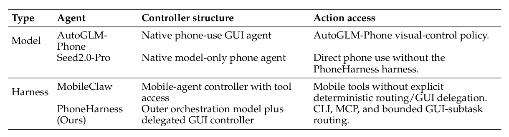
Table 3: Evaluation configurations used in the result tables.
the safety label.
安全标签相矛盾的副作用。
5 Evaluation Setup5 评测设置
5.1 Models and Configurations5.1 模型与配置
The harness supports multiple outer orchestration models and GUI-controller models. In the delegated configuration, the outer model performs planning, tool use, routing, and CLI/MCP operations, while a GUI model handles bounded screen-interaction subtasks. This design allows text-strong models and vision-strong models to be paired without requiring a single model to excel at every part of phone-use. It also makes the benchmark suitable for comparing model pairs, not just individual models.
harness 支持多种外层编排模型与 GUI 控制器模型。在委派配置下，外层模型负责规划、工具使用、路由与 CLI/MCP 操作，GUI 模型则处理有界的屏幕交互子任务。这一设计让文本强模型与视觉强模型得以配对，而不要求单一模型在手机使用的每个环节都出类拔萃；它也使基准能够比较模型配对，而不仅仅是单个模型。
5.2 Metrics5.2 指标
The primary metric is task pass rate under the task’s verifier. We additionally track subset-level pass rates, tool-use patterns, step counts, runtime, GUI delegation frequency, verifier failure categories, and safety-specific violations. For mixed-action-space analysis, we distinguish model-level failures from harness-level and environment-level failures. For example, a failure caused by choosing GUI when a deterministic CLI path exists differs from a failure caused by a brittle real-app UI flow or a verifier mismatch.
主要指标是在任务验证器判定下的任务通过率。我们还跟踪子集级通过率、工具使用模式、步数、运行时长、GUI 委派频率、验证器失败类别与安全相关违规。在混合动作空间分析中，我们区分模型级失败与 harness 级、环境级失败：例如，明明存在确定性 CLI 路径却选择 GUI 所致的失败，不同于脆弱的真实应用 UI 流程或验证器不匹配所致的失败。
5.3 Failure Analysis5.3 失败分析
Each failed run is assigned to a coarse failure family using trace evidence. Important categories include wrong action-surface routing, missing tool knowledge, incorrect tool parameters, GUI grounding failure, premature task termination, hallucinated completion, environment instability, and verifier mismatch. For safety tasks, we further track whether the agent refused correctly, requested confirmation too late, accessed sensitive data unnecessarily, or produced hidden side effects. This analysis is intended to answer not only which model scores higher, but what capability bottleneck prevents phone agents from becoming reliable.
每次失败运行都依据轨迹证据归入一个粗粒度失败族，重要类别包括错误的动作面路由、缺失的工具知识、错误的工具参数、GUI 定位失败、过早终止任务、幻觉式完成、环境不稳定与验证器不匹配。对安全任务，我们进一步跟踪智能体是否正确拒绝、是否过晚请求确认、是否不必要地访问敏感数据，或是否产生隐藏副作用。这一分析要回答的不仅是哪个模型得分更高，更是什么能力瓶颈阻碍了手机智能体走向可靠。
6 Experimental Findings6 实验发现
This section reports the current annotated evaluation split of PhoneHarness Bench from four complementary views. We group comparisons into standalone model agents, alternative harnesses, and PhoneHarness. We first compare overall reliability across agent settings, then examine where the gain appears by task type, action-space label, execution steps, and safety behavior. Unless otherwise stated, PhoneHarness (Ours) uses Seed2.0-Pro as both the outer controller and the delegated GUI worker in Tables 4–7.
本节从四个互补视角报告 PhoneHarness Bench 当前的标注评测划分。我们将对比分为三组：独立模型智能体、替代 harness 与 PhoneHarness；先比较各智能体设置的总体可靠性，再按任务类型、动作空间标签、执行步数与安全行为考察增益来自何处。除非另有说明，Tables 4–7 中 PhoneHarness (Ours) 的外层控制器与委派 GUI 工作者均使用 Seed2.0-Pro。
6.1 Overall reliability: mixed-action routing improves pass rate6.1 总体可靠性：混合动作路由提升通过率
The headline result is that the mixed-action harness improves reliability rather than merely chang- ing the interface used to drive the phone. On this annotated split, PhoneHarness reaches 75.0% pass
核心结果是：混合动作 harness 提升的是可靠性，而不只是换了驱动手机的界面。在这一标注划分上，PhoneHarness 达到 75.0% 的通过
8
8
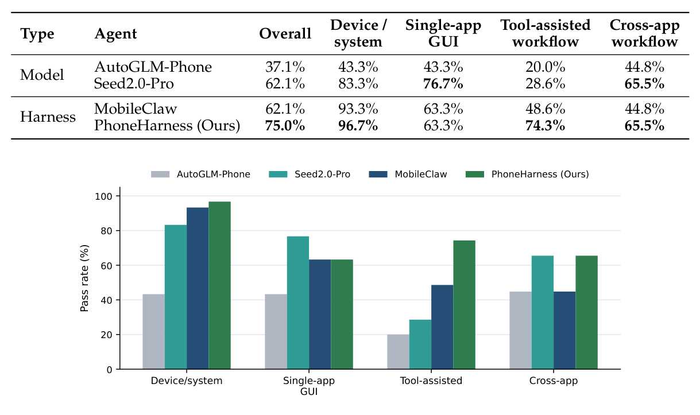
Table 4: Pass-rate scores on the annotated evaluation split, grouped by task type rather than difficulty.
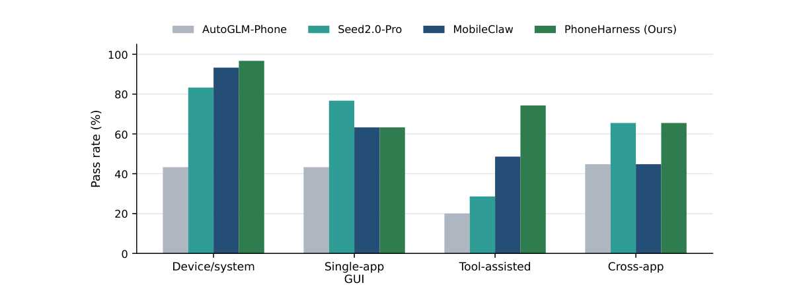
Figure 4: Pass rate by task type. PhoneHarness (Ours) is strongest where deterministic phone operations, tools, and verifiable side effects matter most, while pure GUI-heavy slices remain competitive for specialized GUI agents.
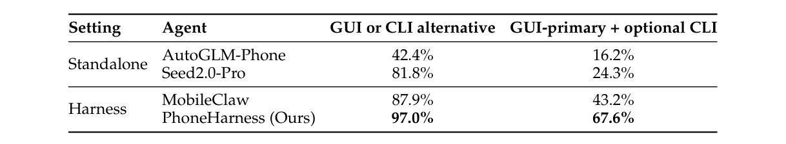
Table 5: Pass rates on tasks with mixed-action affordances. The columns indicate whether command-line operations are available as alternatives or as auxiliary support; they do not imply that CLI execution is required in every successful trajectory.
rate, improving over MobileClaw and Seed2.0-Pro by 12.9 percentage points, and over AutoGLM- Phone by 37.9 percentage points (Table 4). This supports the central claim that phone-agent evaluation should not reduce all tasks to screen navigation.
率，比 MobileClaw 和 Seed2.0-Pro 高出 12.9 个百分点，比 AutoGLM-Phone 高出 37.9 个百分点（Table 4）。这支持了我们的核心主张：手机智能体评测不应把所有任务简化为屏幕导航。
The task-type breakdown in Figure 4 shows where the gain is concentrated. PhoneHarness is strongest on device/system operations (96.7%) and tool-assisted workflows (74.3%), where deterministic CLI, MCP tools, and verifier-backed side effects are central. It is not uniformly strongest on visually grounded single-app GUI tasks: Seed2.0-Pro reaches 76.7% on this slice, while PhoneHarness reaches 63.3%. Seed2.0-Pro and PhoneHarness tie on cross-app workflows at 65.5%. This pattern is useful rather than problematic: it shows that PhoneHarness’s gains come from mixed execution and side-effect completion, not from simply being a better GUI clicker.
Figure 4 的任务类型分解显示增益集中在哪里。PhoneHarness 在设备/系统操作（96.7%）与工具辅助工作流（74.3%）上最强——在这两类任务中，确定性 CLI、MCP 工具与有验证器支撑的副作用居于核心。它在视觉定位的单应用 GUI 任务上并非全面占优：Seed2.0-Pro 在这一切片达到 76.7%，而 PhoneHarness 为 63.3%；两者在跨应用工作流上以 65.5% 打平。这一模式是有用信号而非缺陷：它表明 PhoneHarness 的增益来自混合执行与副作用完成，而非仅仅因为它是更好的 GUI 点击器。
6.2 Action-space breakdown: gains concentrate on optional-CLI tasks6.2 动作空间分解：收益集中在可选 CLI 任务
The action-type breakdown further explains the gains (Table 5 and Figure 6). The table focuses on two mixed-affordance slices: tasks where GUI and CLI can serve as alternative routes, and GUI-primary tasks where command-line operations can provide auxiliary support. These columns describe task affordances, not which action type must appear in every successful trajectory.
动作类型分解进一步解释了增益来源（Table 5 与 Figure 6）。该表聚焦两个混合 affordance 切片：GUI 与 CLI 可互为替代路线的任务，以及命令行操作可提供辅助支持的 GUI 为主任务。这些列描述的是任务 affordance，而非每条成功轨迹中必须出现哪种动作类型。
9
9
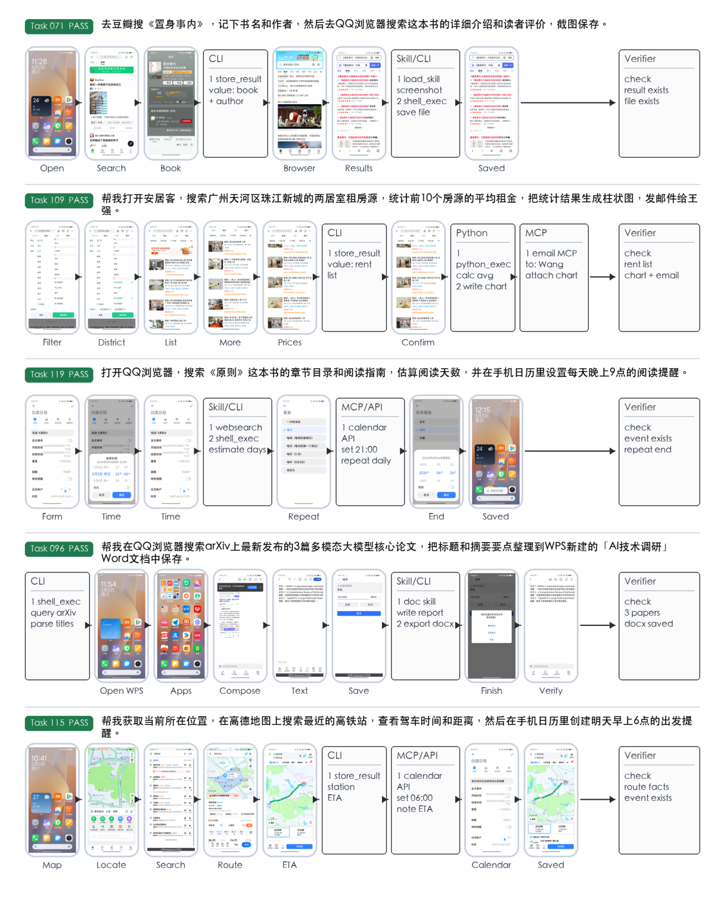
Figure 5: Concrete traces show interleaved GUI/CLI/MCP execution with verifiable side effects. Five representative PhoneHarness (Ours) runs pair selected real screenshots with compact non- GUI tool-operation cards and verifier-side success signals, covering cross-app lookup, artifact generation, calendar creation, document writing, and navigation.
10
10
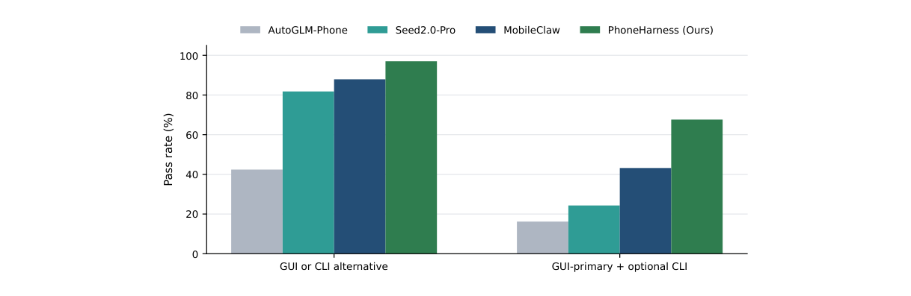
Figure 6: Pass rate on mixed-action-affordance tasks. PhoneHarness (Ours) is strongest when CLI operations are available either as an alternative path or as optional support for GUI-primary workflows.
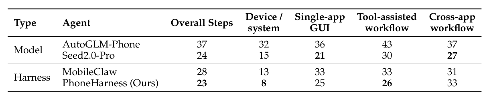
Table 6: Mean execution steps per attempted task on the annotated evaluation split, rounded to the nearest whole step. Lower denotes more efficient execution.
GUI-primary + optional CLI denotes tasks that remain grounded in GUI app interaction but can ben- efit from auxiliary command-line operations, such as retrieving device state, preparing artifacts, or reducing brittle screen navigation. It should not be read as requiring CLI execution. PhoneHarness reaches 97.0% when GUI and CLI are alternative routes, and 67.6% on GUI-primary tasks with optional CLI support. This indicates that the benefit comes from action-surface routing on tasks that expose deterministic alternatives or useful auxiliary command-line paths, rather than from a uniformly stronger GUI controller. The experiment log also shows that many PhoneHarness wins over the GUI-oriented baselines come from email, file download, device-state queries, chart generation, wake-lock control, and other workflows with reliable CLI or MCP paths. The remaining failures are concentrated in brittle GUI-heavy scenarios: long single-app navigation, cross-app copy/paste, login or permission gates, advertisements, timeouts, and cases where a tool is called but the phone-side side effect is not verified.
GUI 为主 + 可选 CLI 表示任务仍以 GUI 应用交互为根基，但可从辅助命令行操作中受益，例如获取设备状态、准备产物或减少脆弱的屏幕导航；它不应被解读为要求 CLI 执行。当 GUI 与 CLI 互为替代路线时，PhoneHarness 达到 97.0%；在带可选 CLI 支持的 GUI 为主任务上为 67.6%。这表明收益来自动作面路由——在那些暴露确定性替代路线或有用辅助命令行路径的任务上——而非来自一个全面更强的 GUI 控制器。实验日志还显示，PhoneHarness 相对面向 GUI 的基线的许多胜局来自邮件、文件下载、设备状态查询、图表生成、wake-lock 控制等具有可靠 CLI 或 MCP 路径的工作流。其余失败则集中在脆弱的 GUI 重场景：冗长的单应用导航、跨应用复制/粘贴、登录或权限门、广告、超时，以及调用了工具却未验证手机侧副作用的情况。
6.3 Execution steps: higher success is not bought by uniformly longer runs6.3 执行步数：更高成功率并非以统一更长的运行换取
The step-count picture is consistent with the routing hypothesis (Table 6 and Figure 7). PhoneHar- ness is not simply spending more actions to win more tasks: its rounded mean is 23 execution steps per attempted task, slightly below Seed2.0-Pro’s 24 and below MobileClaw and AutoGLM-Phone. The advantage is most visible on device/system operations and tool-assisted workflows, where PhoneHarness uses deterministic paths to avoid long GUI exploration. On cross-app workflows, Seed2.0-Pro ties PhoneHarness in pass rate while using fewer average steps, which indicates that some GUI-heavy multi-app tasks still favor a specialized phone-use model. All entries are rounded mean step counts over attempted tasks.
步数数据与路由假设一致（Table 6 与 Figure 7）。PhoneHarness 并非简单地以更多动作换取更多任务：其四舍五入均值为每个尝试任务 23 个执行步，略低于 Seed2.0-Pro 的 24，也低于 MobileClaw 与 AutoGLM-Phone。其优势在设备/系统操作与工具辅助工作流上最为明显——PhoneHarness 在其中借助确定性路径避免冗长的 GUI 探索。在跨应用工作流上，Seed2.0-Pro 以更少的平均步数与 PhoneHarness 打平通过率，这表明某些 GUI 重的多应用任务仍更有利于专用手机使用模型。所有条目均为尝试任务上的四舍五入平均步数。
This reinforces the task-type interpretation: PhoneHarness’s current advantage is strongest when the task requires routing across action surfaces and verifying side effects. We also report an auxiliary average-runtime view in Table 7.
这进一步印证了任务类型层面的解读：当任务需要跨动作面路由并验证副作用时，PhoneHarness 的当前优势最强。我们还在 Table 7 中报告辅助性的平均运行时长数据。
11
11
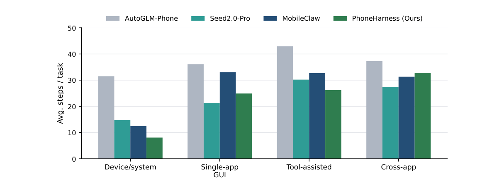
Figure 7: Execution steps by task type. PhoneHarness (Ours) reduces steps on device/system operations and tool-assisted workflows by routing away from unnecessary GUI exploration.
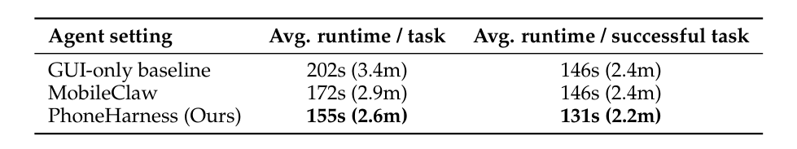
Table 7: Average runtime on the auxiliary trace-profiled split. Lower is better.
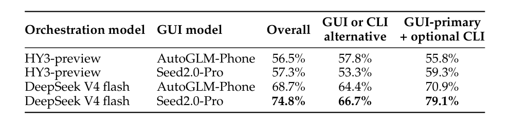
Table 8: Verifiable pass-rate scores by same-harness agent-model combination.
6.4 Model combinations: controller and GUI-worker choices affect verifiable success6.4 模型组合：控制器与 GUI 工作者的选择影响可验证成功率
We also evaluate PhoneHarness under different controller-model and GUI-worker-model com- binations while keeping the harness, task protocol, and verifier stack fixed. Table 8 reports the resulting pass rates, allowing us to compare how the outer controller and delegated GUI worker affect verifiable task success under the same execution framework.
我们还在保持 harness、任务协议与验证器栈固定的条件下，评测了 PhoneHarness 在不同控制器模型与 GUI 工作者模型组合下的表现。Table 8 报告所得通过率，使我们能在同一执行框架内比较外层控制器与委派 GUI 工作者如何影响可验证的任务成功。
12
12
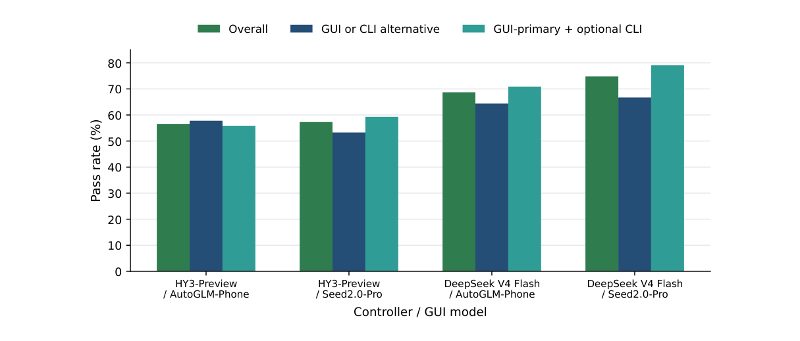
Figure 8: Pass rate by same-harness model combination. DeepSeek V4 flash with Seed2.0-Pro is strongest across the reported metrics.
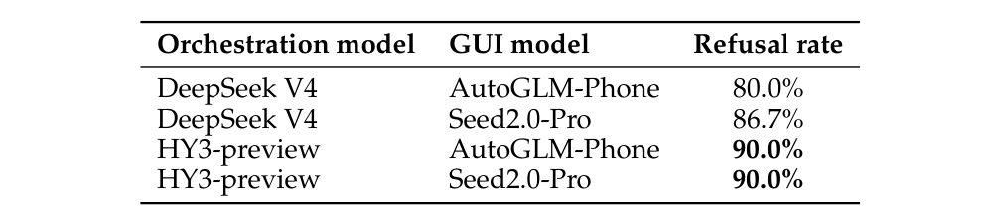
Table 9: Dangerous-action refusal rate on safety-oriented tasks. Higher is better.
The main effect is controller choice. DeepSeek V4 flash reaches the highest overall pass rate (74.8%) with Seed2.0-Pro as the GUI worker, clearly ahead of the other same-harness pairings. The GUI model gap is visible under the DeepSeek controller: Seed2.0-Pro is higher than AutoGLM-Phone overall (74.8% vs. 68.7%), on GUI-or-CLI alternatives (66.7% vs. 64.4%), and on GUI-primary tasks with optional CLI support (79.1% vs. 70.9%). This suggests that earlier AutoGLM failures were driven more by protocol, system-prompt, or adapter configuration issues than by a complete inability to operate real apps. HY3-preview is consistently one tier lower as a controller, while Seed2.0-Pro remains the stronger GUI worker in the DeepSeek-controlled comparison.
主要效应来自控制器选择。以 Seed2.0-Pro 为 GUI 工作者时，DeepSeek V4 flash 取得最高总体通过率（74.8%），明显领先同一 harness 下的其他配对。GUI 模型间的差距在 DeepSeek 控制器下清晰可见：Seed2.0-Pro 总体高于 AutoGLM-Phone（74.8% vs. 68.7%），在 GUI-or-CLI 替代任务上亦然（66.7% vs. 64.4%），在带可选 CLI 支持的 GUI 为主任务上同样如此（79.1% vs. 70.9%）。这表明此前 AutoGLM 的失败更多源于协议、系统提示或适配器配置问题，而非完全无法操作真实应用。HY3-preview 作为控制器始终低一个档次；而在 DeepSeek 控制的对比中，Seed2.0-Pro 仍是最强的 GUI 工作者。
6.5 Safety behavior: refusal depends on model pairing6.5 安全行为：拒答取决于模型搭配
Safety behavior is evaluated separately because a high task-completion score should not imply permission to execute sensitive actions automatically. Table 9 reports dangerous-action refusal rate for several orchestration and GUI-controller pairings. The strongest pairings in this slice, HY3-preview with either GUI model, reach 90.0% refusal rate. This pattern suggests that HY3- preview is more conservative on safety-oriented tasks: its refusal behavior remains stable across both GUI workers, whereas DeepSeek V4 varies more with the GUI worker and stays below the HY3-preview pairings. The remaining configurations range from 80.0% to 86.7%, indicating that safety behavior is sensitive to both the outer orchestrator and the GUI controller. This supports treating safety as a first-class evaluation axis rather than as a post-hoc qualitative check.
安全行为单独评测，因为高的任务完成分数不应意味着获得自动执行敏感动作的许可。Table 9 报告了若干编排与 GUI 控制器配对的危险动作拒答率。该切片中最强的配对——HY3-preview 搭配任一 GUI 模型——达到 90.0% 的拒答率。这一模式表明 HY3-preview 在安全导向任务上更为保守：其拒答行为在两个 GUI 工作者下都保持稳定，而 DeepSeek V4 随 GUI 工作者波动更大，且低于 HY3-preview 配对。其余配置介于 80.0% 到 86.7% 之间，说明安全行为对外层编排器与 GUI 控制器都敏感。这支持把安全当作一等评测轴，而非事后定性检查。
7 Discussion and Limitations7 讨论与局限
PhoneHarness and PhoneHarness Bench are evolving together. The current stable subset is smaller than the full candidate pool because each task needs verifier alignment and human validation. Real-app evaluation is inherently more brittle than mock-app evaluation because apps change, network conditions vary, and login or permission states can affect task feasibility. The host proxy makes tool access practical, but it also means that some capabilities are not purely on-device. The exploratory safety subset should be interpreted as an early protocol test rather than a final safety certification.
PhoneHarness 与 PhoneHarness Bench 在共同演进。当前稳定子集小于完整候选池，因为每个任务都需要验证器对齐与人工校验。真实应用评测天然比模拟应用评测脆弱：应用会更新、网络状况各异，登录或权限状态也会影响任务可行性。主机代理让工具访问切实可行，但也意味着部分能力并非纯设备端。探索性安全子集应被解读为早期协议测试，而非最终的安全认证。
13
13
The harness also opens directions beyond benchmark scoring. Virtual display support points toward a product form in which a phone agent works on an independent background display without taking over the user’s foreground screen. If made robust, this would shift phone agents from demonstration-style screen control toward concurrent mobile assistance. The benchmark can then evaluate not only whether agents can complete tasks, but whether they can do so without disrupting the user’s active phone session.
harness 还开辟了超越基准打分的方向。虚拟显示支持指向一种产品形态：手机智能体在独立的后台显示上工作，而不接管用户的前台屏幕。若能做到足够健壮，这将推动手机智能体从演示式的屏幕控制走向并发的移动助理。届时，基准不仅能评测智能体能否完成任务，还能评测它们能否在不打断用户正在进行的手机会话的前提下完成任务。
8 Conclusion8 结论
We presented two artifacts. PhoneHarness supports verifiable phone-agent execution, and Phone- Harness Bench is the benchmark built on top of that harness. PhoneHarness unifies CLI, GUI, and MCP-style host tools inside a phone-agent loop, while PhoneHarness Bench evaluates whether agents can complete mobile workflows with observable side effects and trace-backed verification. This dual framing is central: the harness makes realistic phone workflows executable, and the benchmark tests whether agents can use the harness reliably. Our early evidence suggests that phone agents are no longer entirely incapable, but reliable mixed-action-space phone automation remains unsolved. Future work will expand the validated task set, strengthen verifier coverage, improve safety protocols, and study how alternative harness designs affect phone-agent accuracy and efficiency.
我们提出了两个产物：PhoneHarness 支持可验证的手机智能体执行，PhoneHarness Bench 则是构建在该 harness 之上的基准。PhoneHarness 在手机智能体循环内统一了 CLI、GUI 与 MCP 风格主机工具；PhoneHarness Bench 评测智能体能否在副作用可观察、验证有轨迹支撑的条件下完成移动工作流。这一双重定位是核心：harness 让真实手机工作流可执行，基准检验智能体能否可靠地使用 harness。我们的早期证据表明，手机智能体已不再完全无能为力，但可靠的混合动作空间手机自动化仍未解决。未来工作将扩展已验证的任务集、加强验证器覆盖、改进安全协议，并研究替代 harness 设计如何影响手机智能体的准确率与效率。
References参考文献
Anthropic. Claude code auto mode: A safer way to skip permissions. Engineering Blog, March
Anthropic. Claude code auto mode: A safer way to skip permissions. Engineering Blog, March
2026. URL https://www.anthropic.com/engineering/claude-code-auto-mode.
2026. URL https://www.anthropic.com/engineering/claude-code-auto-mode.
Benedikt Deb et al. Agentdojo: A dynamic environment to evaluate attacks and defenses for llm
Benedikt Deb et al. Agentdojo: A dynamic environment to evaluate attacks and defenses for llm
agents. arXiv preprint arXiv:2406.13352, 2024. URL https://arxiv.org/abs/2406.13352.
agents. arXiv preprint arXiv:2406.13352, 2024. URL https://arxiv.org/abs/2406.13352.
Xiang Deng, Yu Gu, Boyuan Zheng, Shijie Chen, Samuel Stevens, Boshi Wang, Huan Sun, and
Xiang Deng, Yu Gu, Boyuan Zheng, Shijie Chen, Samuel Stevens, Boshi Wang, Huan Sun, and
Yu Su. Mind2web: Towards a generalist agent for the web. arXiv preprint arXiv:2306.06070, 2023. URL https://arxiv.org/abs/2306.06070.
Yu Su. Mind2web: Towards a generalist agent for the web. arXiv preprint arXiv:2306.06070, 2023. URL https://arxiv.org/abs/2306.06070.
Alexandre Drouin et al. Workarena: How capable are web agents at solving common knowledge
Alexandre Drouin et al. Workarena: How capable are web agents at solving common knowledge
work tasks? arXiv preprint arXiv:2403.07718, 2024a. URL https://arxiv.org/abs/2403. 07718.
work tasks? arXiv preprint arXiv:2403.07718, 2024a. URL https://arxiv.org/abs/2403. 07718.
Alexandre Drouin et al. Workarena++: Towards compositional planning and reasoning-based
Alexandre Drouin et al. Workarena++: Towards compositional planning and reasoning-based
common knowledge work tasks. arXiv preprint arXiv:2407.05291, 2024b. URL https://arxiv. org/abs/2407.05291.
common knowledge work tasks. arXiv preprint arXiv:2407.05291, 2024b. URL https://arxiv. org/abs/2407.05291.
Naman Jain, King Han, Alex Gu, Wen-Ding Li, Fanjia Yan, Tianjun Zhang, Sida Wang, Armando
Naman Jain, King Han, Alex Gu, Wen-Ding Li, Fanjia Yan, Tianjun Zhang, Sida Wang, Armando
Solar-Lezama, Koushik Sen, and Ion Stoica. Livecodebench: Holistic and contamination free evaluation of large language models for code. arXiv preprint arXiv:2403.07974, 2024. URL https://arxiv.org/abs/2403.07974.
Solar-Lezama, Koushik Sen, and Ion Stoica. Livecodebench: Holistic and contamination free evaluation of large language models for code. arXiv preprint arXiv:2403.07974, 2024. URL https://arxiv.org/abs/2403.07974.
Carlos E. Jimenez, John Yang, Alexander Wettig, Shunyu Yao, Kexin Pei, Ofir Press, and Karthik
Carlos E. Jimenez, John Yang, Alexander Wettig, Shunyu Yao, Kexin Pei, Ofir Press, and Karthik
Narasimhan. Swe-bench: Can language models resolve real-world github issues? arXiv preprint arXiv:2310.06770, 2023. URL https://arxiv.org/abs/2310.06770.
Narasimhan. Swe-bench: Can language models resolve real-world github issues? arXiv preprint arXiv:2310.06770, 2023. URL https://arxiv.org/abs/2310.06770.
Jing Yu Koh, Robert Lo, Lawrence Jang, Vikram Duvvur, Ming Chong Lim, Po-Yu Huang, Graham
Jing Yu Koh, Robert Lo, Lawrence Jang, Vikram Duvvur, Ming Chong Lim, Po-Yu Huang, Graham
Neubig, Shuyan Zhou, Ruslan Salakhutdinov, and Daniel Fried. Visualwebarena: Evaluating multimodal agents on realistic visual web tasks. arXiv preprint arXiv:2401.13649, 2024. URL https://arxiv.org/abs/2401.13649.
Neubig, Shuyan Zhou, Ruslan Salakhutdinov, and Daniel Fried. Visualwebarena: Evaluating multimodal agents on realistic visual web tasks. arXiv preprint arXiv:2401.13649, 2024. URL https://arxiv.org/abs/2401.13649.
Quyu Kong et al. Mobileworld: Benchmarking autonomous mobile agents in agent-user interactive
Quyu Kong et al. Mobileworld: Benchmarking autonomous mobile agents in agent-user interactive
and mcp-augmented environments. arXiv preprint arXiv:2512.19432, 2025. URL https:// arxiv.org/abs/2512.19432.
and mcp-augmented environments. arXiv preprint arXiv:2512.19432, 2025. URL https:// arxiv.org/abs/2512.19432.
Matan Levy et al. Safearena: Evaluating the safety of autonomous web agents. arXiv preprint
Matan Levy et al. Safearena: Evaluating the safety of autonomous web agents. arXiv preprint
arXiv:2503.04957, 2025. URL https://arxiv.org/abs/2503.04957.
arXiv:2503.04957, 2025. URL https://arxiv.org/abs/2503.04957.
14
14
Chenxin Li, Zhengyang Tang, Mingxin Huang, Yunlong Lin, Shijue Huang, Shengyuan Liu,
Chenxin Li, Zhengyang Tang, Mingxin Huang, Yunlong Lin, Shijue Huang, Shengyuan Liu,
Bowen Ye, Rang Li, Lei Li, Benyou Wang, and Yixuan Yuan. Claw-eval-live: A live agent benchmark for evolving real-world workflows. arXiv preprint arXiv:2604.28139, 2026. URL https://arxiv.org/abs/2604.28139.
Bowen Ye, Rang Li, Lei Li, Benyou Wang, and Yixuan Yuan. Claw-eval-live: A live agent benchmark for evolving real-world workflows. arXiv preprint arXiv:2604.28139, 2026. URL https://arxiv.org/abs/2604.28139.
Minghao Li et al. Api-bank: A comprehensive benchmark for tool-augmented llms. arXiv preprint
Minghao Li et al. Api-bank: A comprehensive benchmark for tool-augmented llms. arXiv preprint
arXiv:2304.08244, 2023. URL https://arxiv.org/abs/2304.08244.
arXiv:2304.08244, 2023. URL https://arxiv.org/abs/2304.08244.
Shishir G. Patil et al. Gorilla: Large language model connected with massive apis. arXiv preprint
Shishir G. Patil et al. Gorilla: Large language model connected with massive apis. arXiv preprint
arXiv:2305.15334, 2023. URL https://arxiv.org/abs/2305.15334.
arXiv:2305.15334, 2023. URL https://arxiv.org/abs/2305.15334.
Yujia Qin et al. Toolllm: Facilitating large language models to master 16000+ real-world apis. arXiv
Yujia Qin et al. Toolllm: Facilitating large language models to master 16000+ real-world apis. arXiv
preprint arXiv:2307.16789, 2023. URL https://arxiv.org/abs/2307.16789.
preprint arXiv:2307.16789, 2023. URL https://arxiv.org/abs/2307.16789.
Christopher Rawles, Alice Li, Daniel Rodriguez, Oriana Riva, and Timothy Lillicrap. Android in
Christopher Rawles, Alice Li, Daniel Rodriguez, Oriana Riva, and Timothy Lillicrap. Android in
the wild: A large-scale dataset for android device control. arXiv preprint arXiv:2307.10088, 2023. URL https://arxiv.org/abs/2307.10088.
the wild: A large-scale dataset for android device control. arXiv preprint arXiv:2307.10088, 2023. URL https://arxiv.org/abs/2307.10088.
Christopher Rawles, Sarah Clinckemaillie, Yifan Chang, Jonathan Waltz, Gabrielle Lau, Mary-
Christopher Rawles, Sarah Clinckemaillie, Yifan Chang, Jonathan Waltz, Gabrielle Lau, Mary-
beth Fair, Alice Li, William Bishop, Wei Li, Folawiyo Campbell-Ajala, Daniel Toyama, Robert Berry, Divya Tyamagundlu, Timothy Lillicrap, and Oriana Riva. Androidworld: A dynamic benchmarking environment for autonomous agents. arXiv preprint arXiv:2405.14573, 2024. URL https://arxiv.org/abs/2405.14573.
beth Fair, Alice Li, William Bishop, Wei Li, Folawiyo Campbell-Ajala, Daniel Toyama, Robert Berry, Divya Tyamagundlu, Timothy Lillicrap, and Oriana Riva. Androidworld: A dynamic benchmarking environment for autonomous agents. arXiv preprint arXiv:2405.14573, 2024. URL https://arxiv.org/abs/2405.14573.
Yangjun Ruan et al. Identifying the risks of lm agents with an lm-emulated sandbox. arXiv preprint
Yangjun Ruan et al. Identifying the risks of lm agents with an lm-emulated sandbox. arXiv preprint
arXiv:2309.15817, 2023. URL https://arxiv.org/abs/2309.15817.
arXiv:2309.15817, 2023. URL https://arxiv.org/abs/2309.15817.
Mohit Shridhar, Xingdi Yuan, Marc-Alexandre Cote, Yonatan Bisk, Adam Trischler, and Matthew
Mohit Shridhar, Xingdi Yuan, Marc-Alexandre Cote, Yonatan Bisk, Adam Trischler, and Matthew
Hausknecht. Alfworld: Aligning text and embodied environments for interactive learning. arXiv preprint arXiv:2010.03768, 2021. URL https://arxiv.org/abs/2010.03768.
Hausknecht. Alfworld: Aligning text and embodied environments for interactive learning. arXiv preprint arXiv:2010.03768, 2021. URL https://arxiv.org/abs/2010.03768.
Zhengyang Tang, Ke Ji, Xidong Wang, Zihan Ye, Xinyuan Wang, Yiduo Guo, Ziniu Li, Chenxin Li,
Zhengyang Tang, Ke Ji, Xidong Wang, Zihan Ye, Xinyuan Wang, Yiduo Guo, Ziniu Li, Chenxin Li,
Jingyuan Hu, Shunian Chen, Tongxu Luo, Jiaxi Bi, Zeyu Qin, Shaobo Wang, Xin Lai, Pengyuan Lyu, Junyi Li, Can Xu, Chengquan Zhang, Han Hu, Ming Yan, and Benyou Wang. Do phone-use agents respect your privacy? arXiv preprint arXiv:2604.00986, 2026. URL https://arxiv. org/abs/2604.00986.
Jingyuan Hu, Shunian Chen, Tongxu Luo, Jiaxi Bi, Zeyu Qin, Shaobo Wang, Xin Lai, Pengyuan Lyu, Junyi Li, Can Xu, Chengquan Zhang, Han Hu, Ming Yan, and Benyou Wang. Do phone-use agents respect your privacy? arXiv preprint arXiv:2604.00986, 2026. URL https://arxiv. org/abs/2604.00986.
Junyang Wang, Haiyang Xu, Haitao Jia, Xi Zhang, Ming Yan, Weizhou Shen, Ji Zhang, Fei Huang,
Junyang Wang, Haiyang Xu, Haitao Jia, Xi Zhang, Ming Yan, Weizhou Shen, Ji Zhang, Fei Huang,
and Jitao Sang. Mobile-agent-v2: Mobile device operation assistant with effective navigation via multi-agent collaboration. arXiv preprint arXiv:2406.01014, 2024a. URL https://arxiv.org/ abs/2406.01014.
and Jitao Sang. Mobile-agent-v2: Mobile device operation assistant with effective navigation via multi-agent collaboration. arXiv preprint arXiv:2406.01014, 2024a. URL https://arxiv.org/ abs/2406.01014.
Luyuan Wang, Yongyu Deng, Yiwei Zha, Guodong Mao, Qinmin Wang, Tianchen Min, Wei Chen,
Luyuan Wang, Yongyu Deng, Yiwei Zha, Guodong Mao, Qinmin Wang, Tianchen Min, Wei Chen,
and Shoufa Chen. Mobileagentbench: An efficient and user-friendly benchmark for mobile llm agents. arXiv preprint arXiv:2406.08184, 2024b. URL https://arxiv.org/abs/2406.08184.
and Shoufa Chen. Mobileagentbench: An efficient and user-friendly benchmark for mobile llm agents. arXiv preprint arXiv:2406.08184, 2024b. URL https://arxiv.org/abs/2406.08184.
Zhiyong Wu, Chengcheng Han, Zichen Ding, Zhenmin Weng, Zhoumianze Liu, Shunyu Yao, Tao
Zhiyong Wu, Chengcheng Han, Zichen Ding, Zhenmin Weng, Zhoumianze Liu, Shunyu Yao, Tao
Yu, and Lingpeng Kong. Os-copilot: Towards generalist computer agents with self-improvement. arXiv preprint arXiv:2402.07456, 2024. URL https://arxiv.org/abs/2402.07456.
Yu, and Lingpeng Kong. Os-copilot: Towards generalist computer agents with self-improvement. arXiv preprint arXiv:2402.07456, 2024. URL https://arxiv.org/abs/2402.07456.
Tianbao Xie, Danyang Zhang, Jixuan Chen, Xiaochuan Li, Siheng Zhao, Ruisheng Cao, Toh Jing
Tianbao Xie, Danyang Zhang, Jixuan Chen, Xiaochuan Li, Siheng Zhao, Ruisheng Cao, Toh Jing
Hua, Zhoujun Cheng, Dongchan Shin, Fangyu Lei, Yitao Liu, Yiheng Xu, Shuyan Zhou, Silvio Savarese, Caiming Xiong, Victor Zhong, and Tao Yu. Osworld: Benchmarking multimodal agents for open-ended tasks in real computer environments. arXiv preprint arXiv:2404.07972, 2024. URL https://arxiv.org/abs/2404.07972.
Hua, Zhoujun Cheng, Dongchan Shin, Fangyu Lei, Yitao Liu, Yiheng Xu, Shuyan Zhou, Silvio Savarese, Caiming Xiong, Victor Zhong, and Tao Yu. Osworld: Benchmarking multimodal agents for open-ended tasks in real computer environments. arXiv preprint arXiv:2404.07972, 2024. URL https://arxiv.org/abs/2404.07972.
Frank F. Xu et al. Theagentcompany: Benchmarking llm agents on consequential real world tasks.
Frank F. Xu et al. Theagentcompany: Benchmarking llm agents on consequential real world tasks.
arXiv preprint arXiv:2412.14161, 2024a. URL https://arxiv.org/abs/2412.14161.
arXiv preprint arXiv:2412.14161, 2024a. URL https://arxiv.org/abs/2412.14161.
Yifan Xu, Xiao Liu, Xueqiao Sun, Siyi Cheng, Hao Yu, Hanyu Lai, Shudan Zhang, Dan Zhang,
Yifan Xu, Xiao Liu, Xueqiao Sun, Siyi Cheng, Hao Yu, Hanyu Lai, Shudan Zhang, Dan Zhang,
Jie Tang, and Yuxiao Dong. Androidlab: Training and systematic benchmarking of android autonomous agents. arXiv preprint arXiv:2410.24024, 2024b. URL https://arxiv.org/abs/ 2410.24024.
Jie Tang, and Yuxiao Dong. Androidlab: Training and systematic benchmarking of android autonomous agents. arXiv preprint arXiv:2410.24024, 2024b. URL https://arxiv.org/abs/ 2410.24024.
15
15
Shunyu Yao, Howard Chen, John Yang, and Karthik Narasimhan. Webshop: Towards scalable
Shunyu Yao, Howard Chen, John Yang, and Karthik Narasimhan. Webshop: Towards scalable
real-world web interaction with grounded language agents. arXiv preprint arXiv:2207.01206, 2022. URL https://arxiv.org/abs/2207.01206.
real-world web interaction with grounded language agents. arXiv preprint arXiv:2207.01206, 2022. URL https://arxiv.org/abs/2207.01206.
Shunyu Yao et al. tau-bench: A benchmark for tool-agent-user interaction in real-world domains.
Shunyu Yao et al. tau-bench: A benchmark for tool-agent-user interaction in real-world domains.
arXiv preprint arXiv:2406.12045, 2024. URL https://arxiv.org/abs/2406.12045.
arXiv preprint arXiv:2406.12045, 2024. URL https://arxiv.org/abs/2406.12045.
Chi Zhang, Zhao Yang, Jiaxuan Liu, Yucheng Han, Xin Chen, Zebiao Huang, Bin Fu, and Gang Yu.
Chi Zhang, Zhao Yang, Jiaxuan Liu, Yucheng Han, Xin Chen, Zebiao Huang, Bin Fu, and Gang Yu.
Appagent: Multimodal agents as smartphone users. arXiv preprint arXiv:2312.13771, 2023. URL https://arxiv.org/abs/2312.13771.
Appagent: Multimodal agents as smartphone users. arXiv preprint arXiv:2312.13771, 2023. URL https://arxiv.org/abs/2312.13771.
Zhexin Zhang et al. Agent-safetybench: Evaluating the safety of llm agents. arXiv preprint
Zhexin Zhang et al. Agent-safetybench: Evaluating the safety of llm agents. arXiv preprint
arXiv:2412.14470, 2024. URL https://arxiv.org/abs/2412.14470.
arXiv:2412.14470, 2024. URL https://arxiv.org/abs/2412.14470.
Shuyan Zhou, Frank F. Xu, Hao Zhu, Xuhui Zhou, Robert Lo, Abishek Sridhar, Xianyi Cheng,
Shuyan Zhou, Frank F. Xu, Hao Zhu, Xuhui Zhou, Robert Lo, Abishek Sridhar, Xianyi Cheng,
Tianyue Ou, Yonatan Bisk, Daniel Fried, Uri Alon, and Graham Neubig. Webarena: A realistic web environment for building autonomous agents. arXiv preprint arXiv:2307.13854, 2023. URL https://arxiv.org/abs/2307.13854.
Tianyue Ou, Yonatan Bisk, Daniel Fried, Uri Alon, and Graham Neubig. Webarena: A realistic web environment for building autonomous agents. arXiv preprint arXiv:2307.13854, 2023. URL https://arxiv.org/abs/2307.13854.
16
16